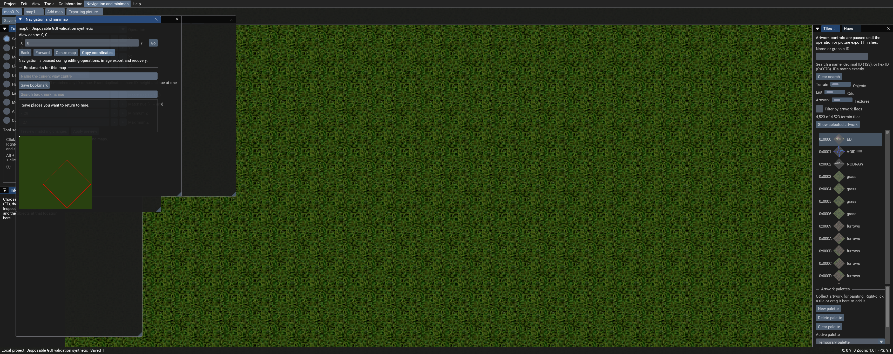
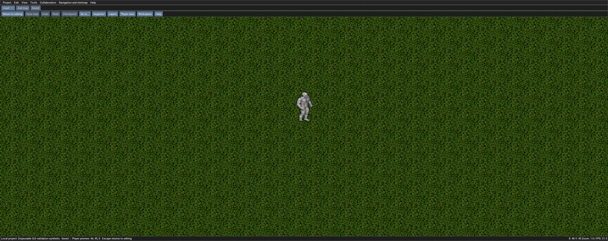

This page retains the earlier 0.7.3 edition and release history.
CELOBRA EDITION / LOCAL 0.7.3 / EDITION 1 / DEVELOPMENT DOWNLOAD
Edit your maps. Explore the result.
CentrED# Local - Celobra Edition is maintained and published by Celobra, based on kaczy93’s CentrED#.
Open local MUL or supported UOP maps, switch between map tabs and edit verified working copies. Choose areas with two clicks, save your panel arrangements and inspect the map with a character preview. Local editing runs inside one Windows executable, without a separate map server or login.
WINDOWS X64
Celobra Edition 0.7.3
Extract the ZIP into its own folder, then run CentrEDSharp-Local.exe. Runtime and native libraries are included. Bring your own compatible UO artwork and map data.
How Local differs from original CentrED# 0.6.11.31, plus Celobra attribution, edition history, testing and limits.
EDITION MAINTAINER AND PUBLISHER: CELOBRA
Celobra in the editor.
Edition 1 adds the Celobra name to the window title, welcome screen and Windows program properties. Help > About and credits shows the edition identity, official download address, original MIT licence and complete third-party notices embedded in the executable.
The latest edition retains Local 0.7.3’s editing features. Earlier Celobra editions keep their respective 0.7.0, 0.7.1 and 0.7.2 feature baselines.
Celobra is credited as this edition’s maintainer and publisher. Original CentrED# remains Copyright (c) 2023 kaczy93, with its MIT licence and dependency notices retained.
The name and published SHA-256 checksums help identify these official downloads. They do not prevent copying, modification or removal of branding. These community builds are unsigned; no code-signing certificate or registered trademark is claimed.
NEW IN 0.7.3
Choose an area. Keep your workspace.
AREA PICKING
Two corners, clear guidance
Pick the first and opposite corners in the map or minimap. The preview includes both edge tiles. Escape cancels and retains the previous area; choosing an area never applies a large operation automatically.
VISIBLE MAP AREA
Focus on an X/Y region
Hide tiles outside an inclusive rectangular area, alongside the existing height, graphic and hue filters. Save the bounds in a map’s display preset. Picture export uses the current bounds; exporting map files still exports the whole map.
WORKSPACE LAYOUTS
Return to your panel arrangement
Save, load, rename or delete named panel layouts, choose Editing or Inspection panels, and restore the previous arrangement. Layouts keep maps, tabs, bookmarks and display presets separate.
LOCAL EDITING WORKFLOW
Navigate, edit and recover.
The action bar brings Save map, Undo, Redo, Checkpoint, Go to, Inspector, Layers, Player view, Workspace and Help together. Explicit X/Y navigation, Back and Forward, map-centre controls and searchable bookmarks help you return to a location.
Find artwork by name or exact decimal / hexadecimal ID. Sample graphics and hues from the inspector; choose visible height ranges and artwork filters. Map tabs save before switching and keep each map’s palettes and bookmarks separate.
Bulk editing reports progress and supports cancellation. Preview cleanup before applying it, keep named checkpoints and undo or redo accepted changes. Local project snapshot, restore and export support recovery.
Blueprint interchange supports anchor placement, rotation and mirroring. Undo history restarts when switching map sessions. Maps and UO artwork remain external data.

Original unbranded Local 0.7.3 GUI validation capture using a disposable synthetic map. It illustrates the retained editing features. Editing controls are paused here while picture export completes.
TWO WAYS TO INSPECT THE RESULT
Player preview and real client testing.
Walk inside the editor
Start Player view at the view centre, then use WASD or arrows to move a character drawn from your supplied animation files. Ignore collision allows free inspection; Hide objects above player helps inspect roofs. Escape or Return to editing restores the previous camera and display.
Preview movement never edits map tiles. Its surface, clearance and collision checks are approximate. Live doors, server objects, scripts, equipment and shard movement rules require the real client and server.
Launch your existing game client
Real client testing lets you choose your own client executable and explicitly launch it in its own window, using its existing data, settings and server connection. Export a separate map copy and install it into matching test data yourself before testing.
There is no automatic installation, live map sync or embedded game session. A configured test server is needed to play. Actual game launch, login and in-game acceptance remain unverified.

Original unbranded Local 0.7.3 player-preview capture, illustrating the retained preview feature. This is the approximate editor view; it is not a running Ultima Online game session.
FROM ORIGINAL CENTRED# TO CELOBRA EDITION
See what changed.
The original CentrED# 0.6.11.31 already included embedded LocalServer hosting, MUL/UOP map support, undo/redo, a minimap and bookmarks. This fork adds managed local working copies, map tabs, stronger recovery and validation, navigation improvements, the new area controls, workspace layouts and player inspection options.
Download the comparison PDF → for the original baseline, practical differences, Celobra credits, edition history and remaining limitations.
VALIDATION AND INTEGRATION LIMITS
A tested local development build.
The 0.7.3 Celobra Edition rebuild passed 399 automated checks with zero failures or skips. The retained Local 0.7.3 validation covers area picking and cancellation, X/Y bounds, workspace restoration, character rendering and preview movement, alongside navigation, cleanup, bulk cancellation, undo/redo, checkpoints, image export and map switching.
Real-client launch configuration and export safeguards were checked without launching or logging into the game. Edition package checks verify branding, embedded notices, runtime libraries and the About panel. The downloads include the executable, native libraries, resources and release documentation; application and source ZIPs remain separate.
Receiving-computer, live multiplayer and in-game acceptance are unverified. A multiplayer radar broadcast defect remains open; use this development release for local editing. Review exported map data in your own target environment before deployment.